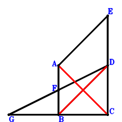
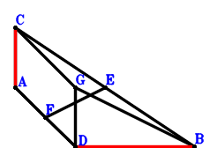
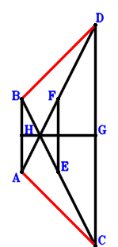

Exercise 23： Let EABD be a parallelogram. F is the midpoint of AB and GD. EC=GC. Prove that AC⊥BD.

\(\because \) EABD is a parallelogram \(\therefore \small\overrightarrow{CE}=\small\overrightarrow{CA} - \small\overrightarrow{CB} + \small\overrightarrow{CD}\).\(\because \) F is the midpoint of AB \(\therefore \small\overrightarrow{CF}=\dfrac{\small\overrightarrow{CA}}{2} + \dfrac{\small\overrightarrow{CB}}{2}\).\(\because \) F is the midpoint of GD \(\therefore \small\overrightarrow{CG}=- \small\overrightarrow{CD} + 2 \small\overrightarrow{CF}=\small\overrightarrow{CA} + \small\overrightarrow{CB} - \small\overrightarrow{CD}\).\(\because \) EC=GC \( \therefore\small\overrightarrow{CE}^{2} - \small\overrightarrow{CG}^{2}=\left(\small\overrightarrow{CA} - \small\overrightarrow{CB} + \small\overrightarrow{CD}\right)^{2} - \left(\small\overrightarrow{CA} + \small\overrightarrow{CB} - \small\overrightarrow{CD}\right)^{2}=- 4 \small\overrightarrow{CA} \cdot \small\overrightarrow{CB} + 4 \small\overrightarrow{CA} \cdot \small\overrightarrow{CD}=0.\)In conclusion, \(\small\overrightarrow{CA} \cdot \small\overrightarrow{DB}=\small\overrightarrow{CA} \cdot \left(\small\overrightarrow{CB} - \small\overrightarrow{CD}\right)=\small\overrightarrow{CA} \cdot \small\overrightarrow{CB} - \small\overrightarrow{CA} \cdot \small\overrightarrow{CD}=0\), that is, AC⊥BD.
Exercise 26： Let CGDA be a parallelogram. F, E are the midpoints of DA, CB, respectively. GB=2FE. Prove that CA⊥DB.

\(\because \) E is the midpoint of CB \(\therefore \small\overrightarrow{BE}=\dfrac{\small\overrightarrow{BC}}{2}\).\(\because \) F is the midpoint of DA \(\therefore \small\overrightarrow{BF}=\dfrac{\small\overrightarrow{BA}}{2} + \dfrac{\small\overrightarrow{BD}}{2}\).\(\because \) CGDA is a parallelogram \(\therefore \small\overrightarrow{BG}=- \small\overrightarrow{BA} + \small\overrightarrow{BC} + \small\overrightarrow{BD}\).\(\because \) GB=2FE \( \therefore4 \small\overrightarrow{EF}^{2} - \small\overrightarrow{GB}^{2}=- \small\overrightarrow{BG}^{2} + 4 \left(- \small\overrightarrow{BE} + \small\overrightarrow{BF}\right)^{2}=- \left(- \small\overrightarrow{BA} + \small\overrightarrow{BC} + \small\overrightarrow{BD}\right)^{2} + 4 \left(\dfrac{\small\overrightarrow{BA}}{2} - \dfrac{\small\overrightarrow{BC}}{2} + \dfrac{\small\overrightarrow{BD}}{2}\right)^{2}=4 \small\overrightarrow{BA} \cdot \small\overrightarrow{BD} - 4 \small\overrightarrow{BC} \cdot \small\overrightarrow{BD}=0.\)In conclusion, \(\small\overrightarrow{CA} \cdot \small\overrightarrow{DB}=- \small\overrightarrow{BD} \cdot \left(\small\overrightarrow{BA} - \small\overrightarrow{BC}\right)=- \small\overrightarrow{BA} \cdot \small\overrightarrow{BD} + \small\overrightarrow{BC} \cdot \small\overrightarrow{BD}=0\), that is, CA⊥DB.
Exercise 32： Let H, F, E, G be the midpoints of BA, AD, BC, CD, respectively. EF=HG. Prove that CA⊥BD.

\(\because \) E is the midpoint of BC \(\therefore \small\overrightarrow{BE}=\dfrac{\small\overrightarrow{BC}}{2}\).\(\because \) F is the midpoint of AD \(\therefore \small\overrightarrow{BF}=\dfrac{\small\overrightarrow{BA}}{2} + \dfrac{\small\overrightarrow{BD}}{2}\).\(\because \) G is the midpoint of CD \(\therefore \small\overrightarrow{BG}=\dfrac{\small\overrightarrow{BC}}{2} + \dfrac{\small\overrightarrow{BD}}{2}\).\(\because \) H is the midpoint of BA \(\therefore \small\overrightarrow{BH}=\dfrac{\small\overrightarrow{BA}}{2}\).\(\because \) EF=HG \( \therefore\small\overrightarrow{FE}^{2} - \small\overrightarrow{HG}^{2}=\left(\small\overrightarrow{BE} - \small\overrightarrow{BF}\right)^{2} - \left(\small\overrightarrow{BG} - \small\overrightarrow{BH}\right)^{2}=\left(- \dfrac{\small\overrightarrow{BA}}{2} + \dfrac{\small\overrightarrow{BC}}{2} - \dfrac{\small\overrightarrow{BD}}{2}\right)^{2} - \left(- \dfrac{\small\overrightarrow{BA}}{2} + \dfrac{\small\overrightarrow{BC}}{2} + \dfrac{\small\overrightarrow{BD}}{2}\right)^{2}=\small\overrightarrow{BA} \cdot \small\overrightarrow{BD} - \small\overrightarrow{BC} \cdot \small\overrightarrow{BD}=0.\)In conclusion, \(\small\overrightarrow{CA} \cdot \small\overrightarrow{DB}=- \small\overrightarrow{BD} \cdot \left(\small\overrightarrow{BA} - \small\overrightarrow{BC}\right)=- \small\overrightarrow{BA} \cdot \small\overrightarrow{BD} + \small\overrightarrow{BC} \cdot \small\overrightarrow{BD}=0\), that is, CA⊥BD.